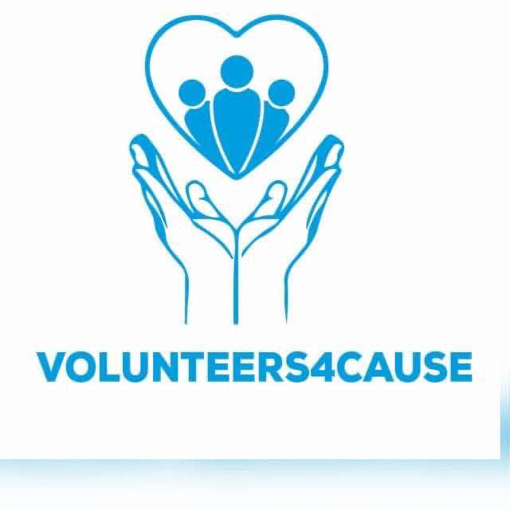
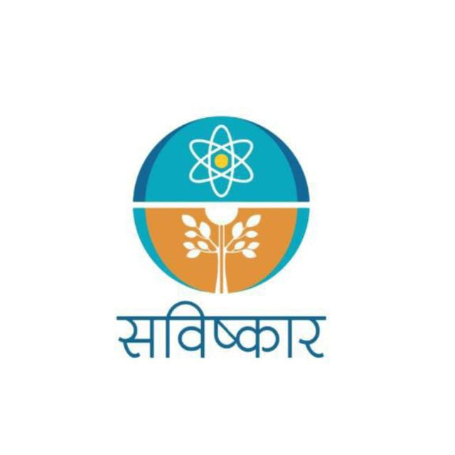
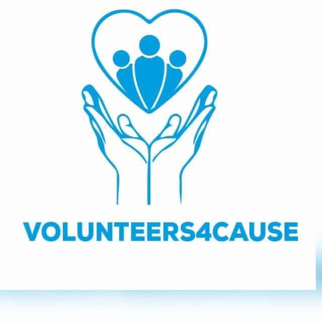
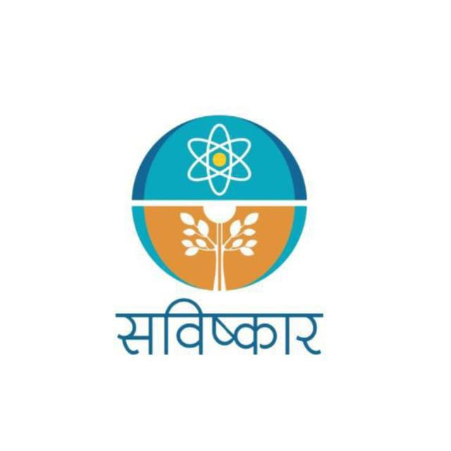

Our Clients
 



1. Savishkar India
Savishkar India is a prominent nationwide organization dedicated to fostering entrepreneurship and providing robust support to startups across the country. As a recognized National Startup and Innovation Forum, Savishkar plays a pivotal role in nurturing the entrepreneurial ecosystem by offering a comprehensive suite of resources and initiatives designed to empower the next generation of innovators.
One of the key pillars of Savishkar's mission is its commitment to delivering extensive technical training programs. These programs are meticulously crafted to cater to the needs of young scientists, engineers, and technologists, ensuring that they are well-equipped to navigate the complexities of the modern technological landscape. By focusing on advanced technologies, Savishkar enables participants to gain hands-on experience that is not only relevant but also essential in today’s fast-paced job market.
Overall, Savishkar India stands as a beacon of support for aspiring entrepreneurs and innovators. Through its diverse range of programs, it not only equips participants with the technical skills and knowledge necessary for career advancement but also instills a sense of entrepreneurial spirit that drives them to pursue their own ventures. By investing in the future of young talent, Savishkar is contributing significantly to the growth of the startup ecosystem in India, ultimately leading to economic development and job creation on a national scale.
2. Eco Network Global
Eco-Network Global stands as one of the largest youth-led organizations in South Asia, dedicated to the critical mission of promoting environmental sustainability. Our platform serves as a vibrant hub for individuals who are passionate about making a tangible difference in the world, inviting them to participate actively in a wide array of initiatives aimed at safeguarding our environment for future generations.
Our efforts are strategically aligned with several Sustainable Development Goals (SDGs), which serve as a universal call to action to end poverty, protect the planet, and ensure prosperity for all. Specifically, we focus on Climate Action (SDG 13), advocating for urgent measures to combat climate change and its impacts. We also champion Clean and Renewable Energy (SDG 7), promoting the transition to sustainable energy sources that can power our communities without depleting natural resources. Additionally, we are committed to preserving Life on Land (SDG 15), working to protect ecosystems, halt biodiversity loss, and promote sustainable land use practices. Clean Water and Sanitation (SDG 6) is another critical area of our focus, as we strive to ensure access to safe and affordable drinking water and adequate sanitation for all.
By empowering young people, especially young women, we aim to foster a generation of leaders who are equipped with the knowledge, skills, and confidence to drive change in their communities. Our programs include workshops, awareness campaigns, and hands-on projects that encourage participants to take ownership of their environment and advocate for sustainable practices. Through collaboration with local schools, community organizations, and government bodies, we create a network of passionate individuals who are committed to making a positive impact.
In summary, Eco-Network Global is not just an organization; it is a movement that harnesses the energy and creativity of youth to address some of the most pressing environmental challenges of our time. By focusing on sustainability and equity, we are paving the way for a brighter, more sustainable future for all. Together, we can create a world where both people and the planet thrive.
3. Volunteers4Cause
Volunteers4Cause (V4C) is an expansive international network that unites individuals from diverse backgrounds, all committed to leveraging their time, skills, and expertise to catalyze action and tackle pressing social issues within their communities, cities, and nations.
Supported by the World Merit Organization, V4C provides tools, resources, and frameworks that empower volunteers to drive social impact initiatives. With a passion for making a difference, V4C enhances the capacity of individuals and organizations alike to create meaningful change globally.
4. Arav Foundation
The Arav Foundation is a dedicated organization that is passionately committed to fostering profound and sustainable change in the lives of individuals from all walks of life. Our overarching goal is to establish an equitable and sustainable society where every individual has the opportunity to thrive, regardless of their circumstances.
At the heart of our mission lies a deep-seated desire to serve as a beacon of hope for some of the most vulnerable members of our community, including orphans, individuals living in slums, residents of old-age homes, and others who find themselves in dire need. We recognize that these individuals often face significant challenges that can seem insurmountable, and it is our duty to step in and provide support.
5. Equal Trade Alliance (ETA)
ETA is a dedicated Campaign Organization focused on advocating for the equitable redistribution of wealth throughout the value chains associated with African raw materials and natural resources. As a non-governmental organization (NGO), ETA employs a multifaceted approach to address the systemic inequalities that exist in trade relationships between African nations and their international partners. Their strategies include raising awareness, conducting rigorous academic research, and engaging in advocacy efforts at national, regional, and global levels. Through these initiatives, they aim to confront and rectify the disparities that have historically marginalized African producers and economies.
One of their primary objectives is to promote the implementation of the Equal Trade Certification. This certification would empower African countries and producers to secure a fair share of the financial gains derived from (semi-)finished products created from African raw materials, including agricultural and mineral resources. By ensuring that the wealth generated from these resources is equitably distributed, we strive to uplift communities and foster sustainable development across the continent.
In essence, they are committed to fostering a just world, one that embodies the principle that no individual should be subjected to domination, nor should anyone possess the right to dominate those who are disempowered. They believe that true progress can only be achieved when all individuals and communities are empowered to thrive.
6. Real Politik Minds
Real Politik Minds is a dynamic initiative spearheaded by students, dedicated to organizing debates and discussions that delve into pressing international issues. This initiative serves as a platform for students to engage critically with the world around them, fostering a deeper understanding of global dynamics and encouraging active participation in the discourse surrounding them. The objectives of Real Politik Minds are multifaceted, each aimed at enriching the student experience and promoting a culture of informed dialogue.
At the core of Real Politik Minds is the belief that every student possesses unique talents and perspectives. The initiative seeks to cultivate these individual strengths by providing opportunities for self-expression and creative thinking. Through various formats of debate and discussion, students are encouraged to explore their ideas and develop their voices, fostering a sense of confidence and ownership over their contributions.In an increasingly complex world, the ability to critically assess information is paramount. Real Politik Minds emphasizes the importance of developing an analytical mindset that weighs both the pros and cons of various arguments. Participants are trained to think critically, evaluate evidence, and construct well-reasoned arguments, equipping them with essential skills for academic success and informed citizenship.
The initiative serves as a forum for exploring a wide range of political and international issues, from global conflicts to human rights challenges. By bringing attention to contemporary topics, Real Politik Minds encourages students to stay informed and engaged with the world, fostering a sense of responsibility and awareness about the issues that shape our societies.The initiative strives to create a welcoming environment where all students, regardless of their backgrounds or experiences, can participate.